Anglais professionnel : Plomberie, chauffage
CAP Monteur en installations sanitaires et CAP Monteur en installations thermiques. Seize mots anglais du métier, outils, objets et gestes de tous les jours. Ressource en libre accès.
Quatre étapes : du français à l'anglais, écouter et choisir, associer, compléter une phrase au travail. Le bouton « Écouter » lit le mot en anglais britannique.
Liste de vocabulaire
| Image | Français | English | Audio |
|---|---|---|---|
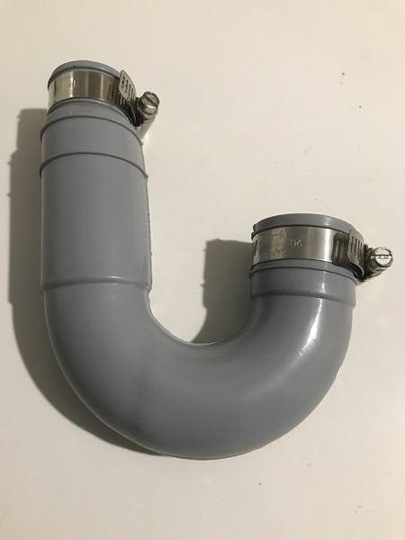 | le tuyau | pipe | |
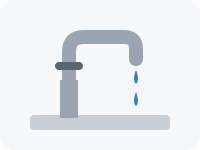 | le robinet | tap | |
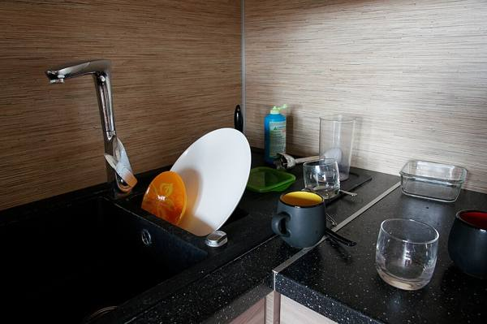 | l'évier | sink | |
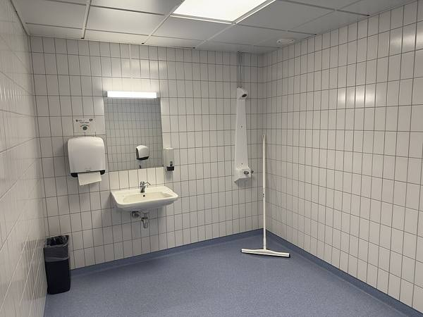 | le lavabo | washbasin | |
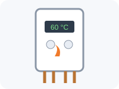 | la chaudière | boiler | |
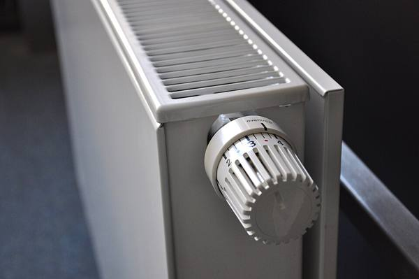 | le radiateur | radiator | |
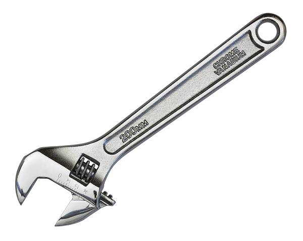 | la clé à molette | adjustable spanner | |
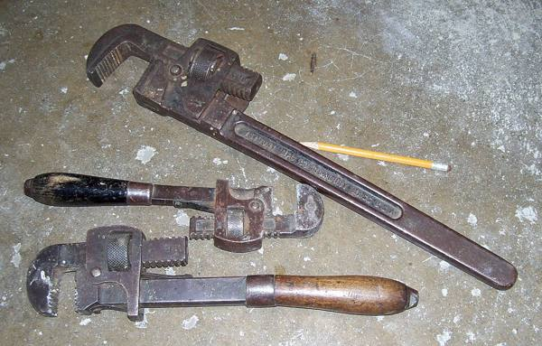 | la clé serre-tube | pipe wrench | |
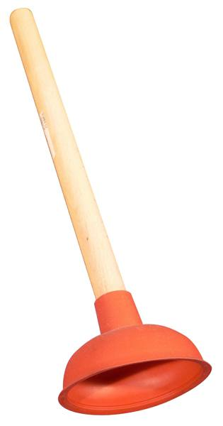 | la ventouse | plunger | |
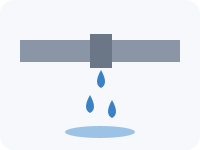 | la fuite | leak | |
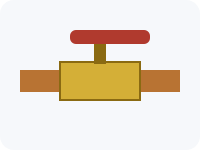 | la vanne | valve | |
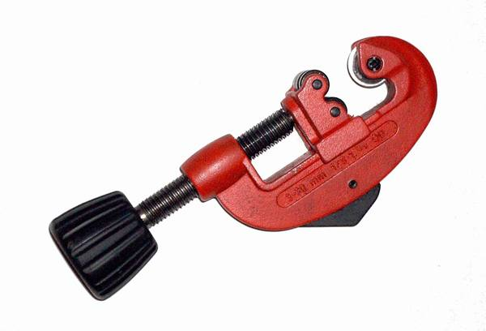 | le coupe-tube | pipe cutter | |
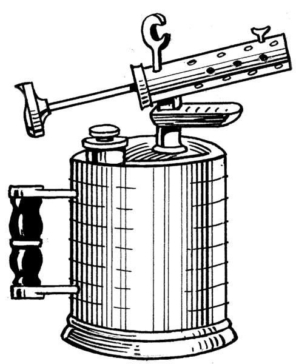 | le chalumeau | blowtorch | |
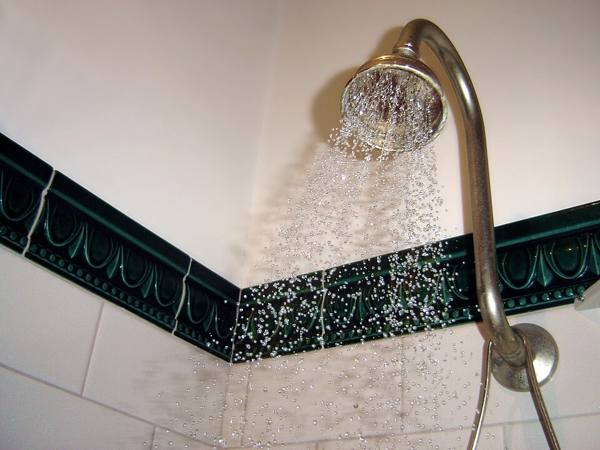 | la douche | shower | |
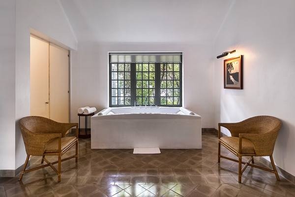 | la baignoire | bath | |
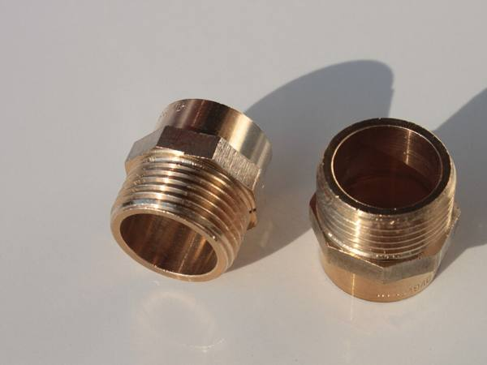 | le raccord | fitting |
Corrigé pour le professeur : phrases au travail
- There is a ________ under the sink. (leak)
- Turn off the water at the ________. (valve)
- The ________ is dripping: it needs a new washer. (tap)
- Cut the copper pipe with the ________. (pipe cutter)
- The house is cold: check the ________. (boiler)
- Unblock the toilet with the ________. (plunger)
Dans les étapes 1, 2 et 3, la bonne réponse correspond à la ligne de la liste de vocabulaire.
Crédits des images
Photos sous licence libre, issues de Wikimedia Commons, redimensionnées pour le téléphone. Dessins originaux pour les gestes et les notions.
- le tuyau (pipe) : photo de Steven Pavlov, licence CC0, page du fichier sur Wikimedia Commons.
- le robinet (tap) : dessin original, Itinéraires et destinations, CC BY-NC-SA 4.0.
- l'évier (sink) : photo de Vyacheslav Argenberg, licence CC BY 4.0, page du fichier sur Wikimedia Commons.
- le lavabo (washbasin) : photo de Wolfmann, licence CC BY-SA 4.0, page du fichier sur Wikimedia Commons.
- la chaudière (boiler) : dessin original, Itinéraires et destinations, CC BY-NC-SA 4.0.
- le radiateur (radiator) : photo de ri, licence CC0, page du fichier sur Wikimedia Commons.
- la clé à molette (adjustable spanner) : photo de MrX, licence CC BY-SA 3.0, page du fichier sur Wikimedia Commons.
- la clé serre-tube (pipe wrench) : photo de Jayess, licence Public domain, page du fichier sur Wikimedia Commons.
- la ventouse (plunger) : photo de Frank C. Müller, licence CC BY-SA 2.0 de, page du fichier sur Wikimedia Commons.
- la fuite (leak) : dessin original, Itinéraires et destinations, CC BY-NC-SA 4.0.
- la vanne (valve) : dessin original, Itinéraires et destinations, CC BY-NC-SA 4.0.
- le coupe-tube (pipe cutter) : photo de Singlespeedfahrer, licence CC0, page du fichier sur Wikimedia Commons.
- le chalumeau (blowtorch) : photo de Pearson Scott Foresman, licence Public domain, page du fichier sur Wikimedia Commons.
- la douche (shower) : photo de Téléversé par Andrzej 22 (Wikimedia Commons), licence CC BY-SA 3.0, page du fichier sur Wikimedia Commons.
- la baignoire (bath) : photo de Basile Morin, licence CC BY-SA 4.0, page du fichier sur Wikimedia Commons.
- le raccord (fitting) : photo de Emilian Robert Vicol, licence CC BY 2.0, page du fichier sur Wikimedia Commons.
Fiche de vocabulaire à imprimer
Gros caractères (16 points minimum), en trois formats :